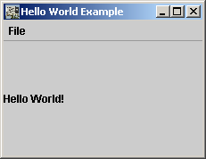

Hello World
The hello world example is the most famous example in programming languages and (of course) should not be missed
in gui4j. The compiled examples are available in binary and in source code form:
Running the example
java -cp gui4j.jar;examples.jar org.gui4j.doc.examples.helloWorld.HelloWorldMain
The following window appears:

The definitions
The definitions can be found in the zip file examples-src.zip
in the folder org.gui4j.doc.examples.helloWorld